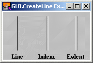

GUI.CreateLine (x1, y1, x2, y2, kind : int) : int
Creates a line and returns the line's widget ID. Lines are generally used to separate parts of a window. A line is used to make the window look better and help organize the GUI elements.
Lines are passive widgets, meaning that they do not respond to button clicks or keystrokes. The x1 and y1 parameters specify one end-point of the line and the x2 and y2 parameters specify the other end point. The line must either be horizontal or vertical (i.e. x1 must equal x2 or y1 must equal y2). The kind parameter specifies the type of line. This is one of 0, GUI.LINE, GUI.INDENT or GUI.EXDENT. A kind of 0 is the default and is the same as GUI.LINE. GUI.INDENT and GUI.EXDENT only display properly if the background colour has been set to gray using GUI.SetBackgroundColor. GUI.INDENT makes the line appear indented or recessed. GUI.EXDENT makes the line appear to stand out from the window.

The following program draws three lines with three labels in the window.
import GUI
View.Set ("graphics:180;100,nobuttonbar")
GUI.SetBackgroundColor (gray)
var line, indentLine, exdentLine : int
var lineLabel, indentLabel, exdentLabel : int
line := GUI.CreateLine (30, 20, 30, 90, 0)
indentLine := GUI.CreateLine (90, 20, 90, 90, GUI.INDENT)
exdentLine := GUI.CreateLine (150, 20, 150, 90, GUI.EXDENT)% Label the lines.
lineLabel := GUI.CreateLabelFull (30, 15, "Line", 0, 0,
GUI.CENTER + GUI.TOP, 0)
indentLabel := GUI.CreateLabelFull (90, 15, "Indent", 0, 0,
GUI.CENTER + GUI.TOP, 0)
exdentLabel := GUI.CreateLabelFull (150, 15, "Exdent", 0, 0,
GUI.CENTER + GUI.TOP, 0)
When GUI.CreateLine is called, the newly created line will be displayed immediately unless GUI.DisplayWhenCreated has been called with the display parameter set to false. A line widget is a passive widget and cannot be enabled or disabled.
The following GUI subprograms can be called with a line as the widgetID parameter:
Exported qualified. This means that you can only call the function by calling GUI.CreateLine, not by calling CreateLine.